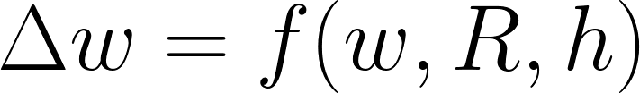
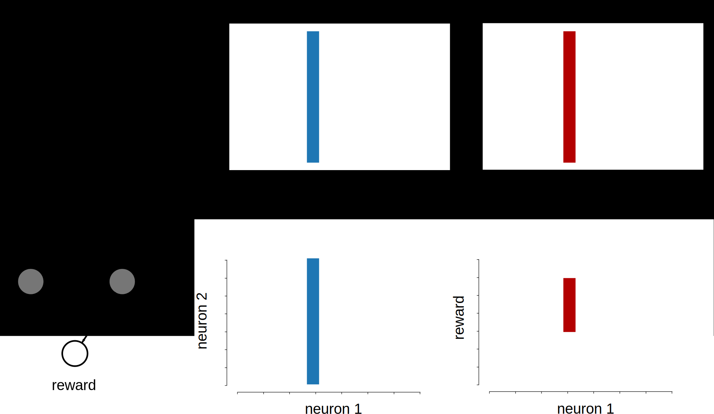
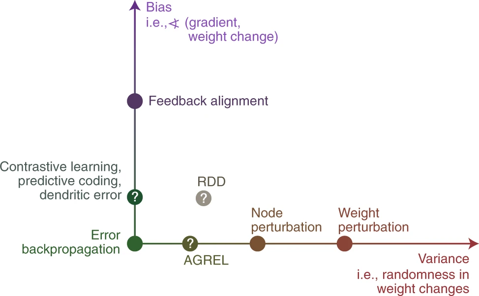
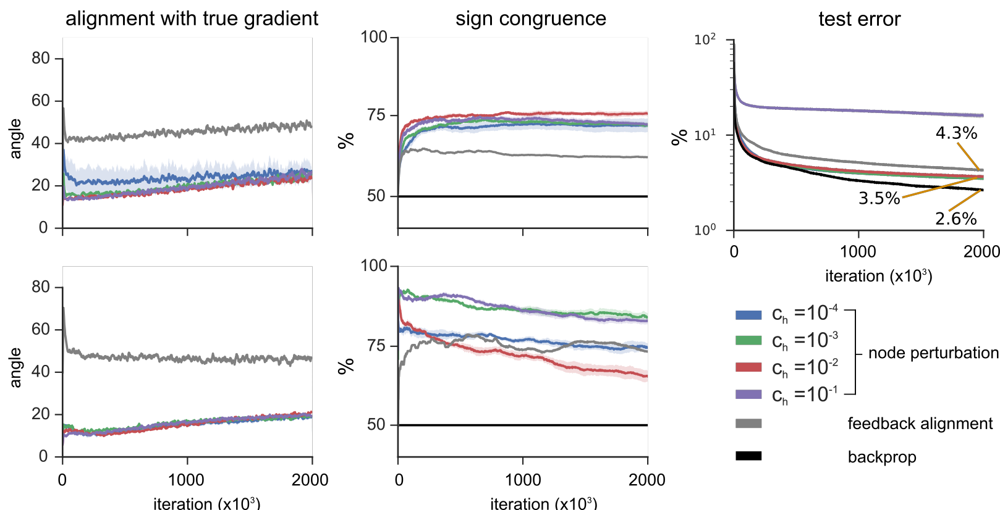
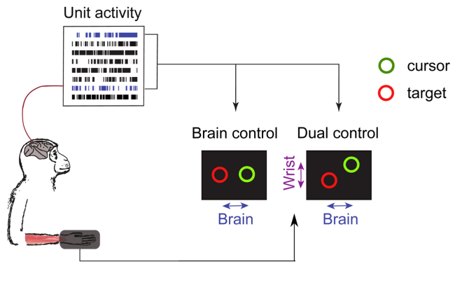

Causal inference algorithms for learning in neural networks
Ben Lansdell, Bioengineering UPenn
Rutgers-Newark Mathematics & Computer Science. February 5th 2020
Two complementary tasks to understand intelligence
1. Build artificial systems
2. Study human intelligence
Learning is central to both human and artificial intelligence
$\Rightarrow$ Advances in each domain can inspire the other
Machine learning, neuroscience, and causality
Causation relates to a number of challenges in both machine learning and neuroscience
Messerli, N Engl J Med 2012
In ML:
Causal models are more robust to changes in environment/distribution: better transfer, generalization
Fairness: strong associations are not causal, and may be unfair/biased/prejudiced
Safety: observational data may not say what happens when we act/intervene/change distributions
Machine learning, neuroscience, and causality
Causation relates to a number of challenges in both machine learning and neuroscience
In neuroscience:
Data analysis:
neural datasets generally hugely undersampled – confounding, interpretation
increased ability to perturb specific circuits
Efficient learning, transfer, generalization
Causal learning
Machine learning, neuroscience, and causality
Causation relates to a number of challenges in both machine learning and neuroscience
Claim: progress in both machine learning and neuroscience can come from explicitly casting problems as causal learning problems
Outline
The neuronal credit assignment problem as causal inference
Learning to solve the credit assignment problem
Causal learning and decision making
Learning – improving performance over time
Find parameters $\theta$ that minimize a loss/maximize a reward function, $R$
Learning in the brain

What are the synaptic update rules used by neurons that provide efficient and flexible learning?
The neuronal credit assignment problem
To learn, a neuron must know its effect on the loss function
In spiking neural networks, this means something like:
If, for a given input, a spike increases the loss, the weights leading to that spike should decrease
If, for a given input, a spike decreases the loss, the weights leading to that spike should increase
The problem: noise correlations and confounding
$\Rightarrow$ Viewing learning as a causal inference problem may provide insight
Causality
Defined in terms of counterfactuals or interventions
The causal effect: $\beta = \mathbb{E}(R|H\leftarrow 1) - \mathbb{E}(R|H\leftarrow 0)$
How can we predict the causal effect from observation?
Causality

Defined in terms of counterfactuals or interventions
The causal effect: $\beta = \mathbb{E}(R|H\leftarrow 1) - \mathbb{E}(R|H\leftarrow 0)$
How can we predict the causal effect from observation?
Credit assignment as causal inference
What is a neuron's causal effect on reward, and so how should it change to improve performance?
$$
\beta_i = \mathbb{E}(R| H_i \leftarrow 1) - \mathbb{E}(R| H_i \leftarrow 0)
$$
$\Rightarrow$ How can a neuron perform causal inference?
Credit assignment as causal inference
One solution: Randomization
If independent (unconfounded) noise is added to the system, this can be correlated with reward for an estimate of loss gradients
In fact, the REINFORCE algorithm correlates reward with independent pertubations in activity, $\xi$:
$$
\mathbb{E}( R\xi ) \approx \sigma^2 \frac{\delta R}{\delta h}
$$
But:
Requires each neuron measures an IID noise source, $\xi^i$, or knows its output relative to some expected output
Only well characterized in specific circuits e.g. birdsong learning (Fiete and Seung 2007)
Causal learning without randomization
An observation: decisions made with arbitary thresholds let us observe counterfactuals
Adapted from Moscoe et al, J Clin Epid 2015
Known as regression discontinuity design (RDD) in economics
Two more observations:
A neuron only spikes if its input is above a threshold
A spike can have a measurable effect on outcome and reward
Suggests regression discontinuity design can be used by a neuron to estimate its causal effect.
RDD for solving credit assignment
Lansdell and Kording, bioRxiv 2019
Inputs that place the neuron close to threshold are unbiased estimate of causal effect
Can relate causal effect to gradients $\Rightarrow$ derive stochastic gradient descent learning rule
Learning trajectories are less biased and converge faster
Why spike?
Neurons need to communicate over large distances
Calcium imaging in Hyrda. Dupre and Yuste 2018
Computationally, a spiking discontinuity is inconvenient for learning
What are the comptuational benefits of spiking?
With RDD-based learning, spiking is a feature and not a bug
Part 1 summary
RDD can be used to estimate causal effects, and can provide a solution to the credit assignment problem in spiking neural networks
Shows a neuron can do causal inference without needing to randomize
Relies on the fact that neurons spike when input exceeds a threshold – spiking is a feature not a bug
Outline
The neuronal credit assignment problem as causal inference
Learning to solve the credit assignment problem
Causal learning and decision making
Learning rules that scale to larger problems

Richards et al Nature Neuroscience 2019
Either implicitly or explicitly, many learning rules use gradient information to optimize their weights
Vary according to their bias and variance
Learning rules that scale to larger problems
Richards et al Nature Neuroscience 2019
Reinforcement-learning based algorithms do not lead to efficient learning – high variance estimators
$\Rightarrow$ Need higher-dimensional error signal to learn from
Learning rules that scale to larger problems
Is this plausible?
Cortical structure has both feedforward and feedback connections
Pyramidal neurons contain both apical and basal compartments, allowing for separate sites of integration (Kording and Konig 2001, Guergiuev et al 2017)
Does this help?
$\Rightarrow$ Investigate in the setting of artificial neuron networks
Biologically implausible backpropagation
The gradient algorithm, backpropagation, suggests one form of such a network
Low bias, low variance – 'the workhorse of deep learning'
But weights of this network would be transpose of the feedforward weights – e.g. require weight transport
Learning without weight transport
However:
Weight transport can be avoided by using random, fixed feedback weights, $B_i$ – feedback alignment
Works on small fully-connected networks
Suggests high-dimensional error signals help, even if very biased
But:
Doesn't work on deep networks, CNNs, networks with bottleneck layers
$\Rightarrow$ Can we improve on feedback alignment by learning weights $B_i$?
Weights in the final layer converge, in the following way
Theorem 1: The least squares estimator
\begin{equation*}
(\hat{B}^{N+1})^T = \hat{\lambda}^N (\mathbf{e}^{N+1})^T\left(\mathbf{e}^{N+1}(\mathbf{e}^{N+1})^T\right)^{-1},
\end{equation*}
converges to the true feedback matrix, in the sense that:
$$
\lim_{c_h\to 0}\text{plim}_{T\to\infty} \hat{B}^{N+1} = W^{N+1},
$$
where $\text{plim}$ indicates convergence in probability.
Learning feedback weights with perturbations
Weights in all layers converge, for a linear network
Theorem 2: For $\sigma(x) = x$, the least squares estimator
$$
\begin{equation*}
(\hat{B}^{n})^T = \hat{\lambda}^{n-1} (\mathbf{\tilde{e}}^{n})^T\left(\mathbf{\tilde{e}}^{n}(\mathbf{\tilde{e}}^{n})^T\right)^{-1}\qquad 1 \le n \le N+1,
\end{equation*}$$
converges to the true feedback matrix, in the sense that:
$$
\lim_{c_h\to 0}\text{plim}_{T\to\infty} \hat{B}^{n} = W^{n}, \qquad 1 \le n \le N+1.
$$
A small example
Test on a 4 layer network solving MNIST
Learns to more closely approximate true gradient than random weights

Lansdell, Prakash and Kording, ICLR 2020
A (slightly) larger example
Test on a 5 layer autoencoding network on MNIST
Feedback alignment fails to solve this task
Node perturbation learns faster than backprop w stochastic gradient descent
Comparable to BP with ADAM optimzer
A larger example
Also leads to improved performance on CNNs
(Too deep to propagate approximate signals through all layers
$\Rightarrow$ Use direct feedback alignment instead)
dataset
BP
NP
DFA
CIFAR10
76.9$\pm$0.1
74.8$\pm$0.2
72.4$\pm$0.2
CIFAR100
51.2$\pm$0.1
48.1$\pm$0.2
47.3$\pm$0.1
Mean test accuracy of CNN over 5 runs trained with backpropagation, node perturbation and direct feedback alignment (DFA)
$\Rightarrow$ Shows challenging computer vision problems can be solved without weight transport
Summary
Shown how:
neurons can use their spiking threshold to estimate their causal effect on reward
a perturbation-based learning rule can be used to train a feedback network to provide useful error information
Applications in:
Neuromorphic hardware – learning with spiking networks
Application specific integrated circuits (ASICs) – learning without weight transport
A combination of these can provide biologically plausible and scaleable learning systems
Outline
The neuronal credit assignment problem as causal inference
Learning to solve the credit assignment problem
Causal learning and decision making
Causal learning and decision making
What is the effect of my actions, and how do I use this to maximize reward?
If actions/experimentation is cheap/easy/etc
Causal learning and decision making
What is the effect of my actions, and how do I use this to maximize reward?
If actions/experimentation is difficult/expensive/etc
~Reinforcement learning + causal inference
Causal learning and decision making
What is the effect of my actions, and how do I use this to maximize reward?
Neuronal credit assignment problem
Conservative exploration
Combining observational learning with reinforcement learning
BCIs as a testbed for credit assignment

Lansdell et al IEEE Trans NSRE 2020
Aljadeff et al Neuron 2016
Lansdell et al PLoS Comp Biol. 2014
Causal learning and decision making
What is the effect of my actions, and how do I use this to maximize reward?
Neuronal credit assignment problem
Conservative exploration
Combining observational learning with reinforcement learning
Thresholding policies allow conservative exploration in contextual multi-armed bandits
Lansdell, Triantafillou, and Kording 2020. Submitted
Causal learning and decision making
What is the effect of my actions, and how do I use this to maximize reward?
Neuronal credit assignment problem
Conservative exploration
Combining observational learning with reinforcement learning
Meta-RL for observational causal learning
Lansdell In preparation
Lansdell, Kording. Curr. Opin. Behav. Sci. 2019
Causal learning and decision making
What is the effect of my actions, and how do I use this to maximize reward?
Neuronal credit assignment problem
Conservative exploration
Combining observational learning with reinforcement learning
Causal models can improve both ML and models of our own learning
References
Lansdell B, Kording K, "Spiking allows neurons to estimate their causal effect" biorxiv 2019
Lansdell B, Triantafilou S, Kording K "Rarely-switching linear bandits: causal effects optimization in the real world" arxiv 2019
Lansdell B, Prakash P, Kording K, "Learning to solving the credit assignment problem" ICLR 2020, Addis Ababa, Ethiopia
Lansdell B, Milovanovic I, Mellema C, Fairhall A, Fetz E, Moritz C, "Reconfiguring motor circuits for a joint manual and BCI task" IEEE Trans. Neural Systems and Rehabilitation Engineering, 2020, 28(1)
Lansdell B, Kording K, "Towards learning-to-learn" Current Opinion in Behavioral Science, 2019, 29, 45-50
Aljadeff Y, Lansdell B, Fairhall A, Kleinfeld D, "Analysis of neuronal spike trains, deconstructed", Neuron 2016, 91(2)
Pang R, Lansdell B, Fairhall A, "Dimensionality Reduction in Neuroscience", Current Biology 2016, 26: R1-R5
Lansdell B, Ford K, Kutz J N, "A reaction-diffusion model of cholinergic retinal waves", PLoS Computational Biology, 2014, 10(12): e1003953
Acknowledgments
Konrad Kording (U Penn)
Kording lab
Ari Benjamin
David Rolnick
Roozbeh Farhoodi
Prashanth Prakash
Adrienne Fairhall (UW)
Fairhall lab
Rich Pang
Alison Duffy
Chet Moritz (UW)
Ivana Milovanovic (UW)
Cooper Mellema (UT Austin)
Eberhard Fetz (UW)
Sofia Triantafilou (UPitt)
J Nathan Kutz (UW)
Kevin Ford (UC Berkeley)
David Kleinfeld (UCSD)
Yonatan Aljadeff (ICL)
RDD as a way for a neuron to solve credit assignment
Lansdell and Kording, bioRxiv 2019
Is this plausible?
Consistent with:
current models of sub-threshold dependent plasticity
current models of neuromodulator dependent plasticity
How to test?
Over a fixed time window a reward is administered when neuron spikes
Stimuli are identified which place the neuron's input drive close to spiking threshold.
RDD-based learning predicts an increase synaptic changes for a set of stimuli containing a high proportion of near threshold inputs, but that keeps overall firing rate constant.